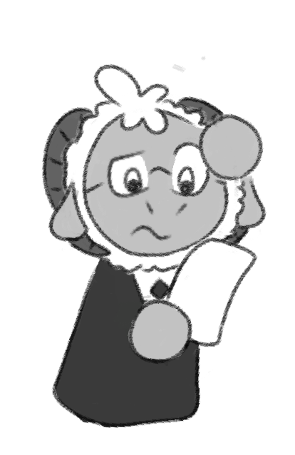

oh, that page! yeah, it's--oh. um...
Sorry, I couldn't find what you were looking for. :(
If you believe you were sent here in error, then please let me know at my Guestbook so I can fix it!
If you want, you can also return to the home page here.
In the meantime, I'll, uh, keep looking. It's got to be around here somewhere...
ERROR - 404 Not Found
